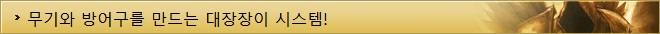

디아블로3 가이드
| 기초정보 | 인터페이스 | 단축키 | 퀘스트 |
|---|---|---|---|
| 제작 | 대장장이 | 보석공 | 점술가 |
| 기타 | 직업선택 | 지도 | |

대장장이는 전작의 큐브를 이용한 조합 시스템으로 무언가를 만든다는 점에서 비슷하지만 자세히 살펴보면 일반적인 mmorpg의 제작 시스템과 더 가깝습니다.
레시피가 존재하며 제작을 하는 엔피씨가 따로 존재하고, 상위 아이템을 제작하기 위해서는 제작의 레벨을 올리는 행위를 해야만 합니다.
제작 아이템에 붙는 옵션은 무작위입니다.
디아블로3에서는 대장장이를 통해 무기와 방어구를 제작할 수 있고 그 리스트가 나누어져 있으며 제작으로는 마법 아이템과 희귀 아이템을 만들수 있습니다.
원하는 장비가 안나온다구요? 대장장이를 찾아가 만들어 보는 것도 괜찮은 선택일 것이지만 붙는 옵션는 복불복이라는 것을 명심해야 하며, 마법 아이템에는 2가지 무작위 옵션이 붙고, 희귀 아이템은 4가지가 붙게 됩니다.
▲ 무기와 방어구를 만들수 있다.
디아블로3의 대장장이는 레시피가 존재하고 그 레시피에 나와 있는 재료를 이용해 장비를 만들수 있으며, 아이템을 만들기 위해서는 레시피와 재료가 필요합니다.
레시피는 대장장이가 성장함에 따라 자동적으로 추가되기도 하고 일부 상위 제작템은 도면을 구해야하며 재료를 얻기 위해서는 직접 아이템을 분해하여야 하고, 이를 위한 대장장이 탭이 따로 마련되어 있습니다.
아이템은 마법 아이템 이상부터 분해가 가능합니다.
▲ 분해와 재료 아이템
디아블로3의 대장장이는 12단계의 과정을 거쳐 성장을 합니다.
단계별 명칭은 수습생, 직공, 기능공, 숙련공, 달인, 명인, 대가, 거장, 명장, 불세출로 분류되어 있고, 확장팩으로 11단계의 초인과 12단계의 지존이 추가됩니다. 상위의 아이템을 제작하려면 대장장이의 레벨을 높여주어야 합니다.
대장장이의 레벨을 높이기 위해서는 초반엔 골드를 투자하고 그 이상부터는 골드와 아이템이 필요하며, 대장간은 레벨이 상승함에 따라 변화를 보입니다.
▲ 대장장이 레벨업 탭과 단계별 대장간의 변화 모습